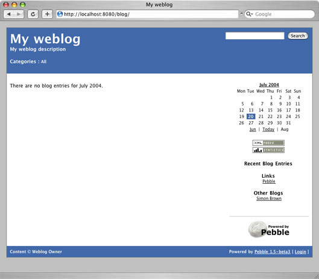

|
If you want to get started quickly and have a Tomcat installation up and running, Pebble can be deployed in a couple of minutes by following some simple steps.
- Download Pebble from here.
- Copy
pebble.war from pebble-weblog into $TOMCAT_HOME/webapps.
- Add the followng line into the
$TOMCAT_HOME/conf/tomcat-users.xml file, before the final closing tag.
<user username="someuser" password="password" roles="blog-owner,blog-contributor"/>
- Restart Tomcat and (assuming a default local installation) point your browser to http://localhost:8080/pebble/.
- Pebble should now be running and you can login via the Login link at the bottom of the page.

|